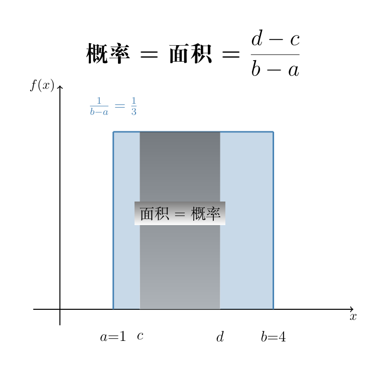
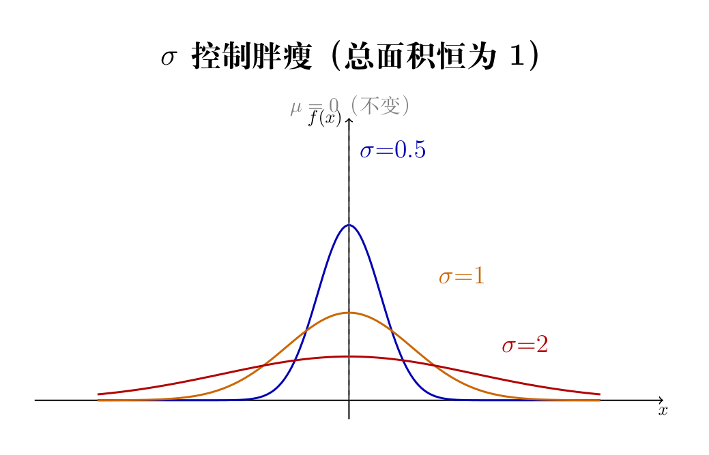
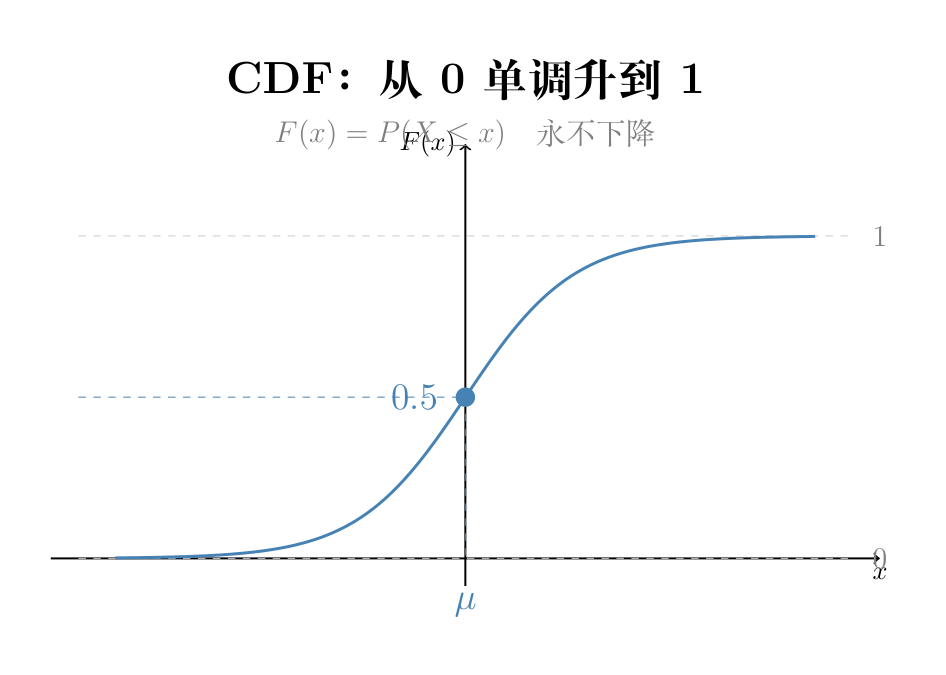
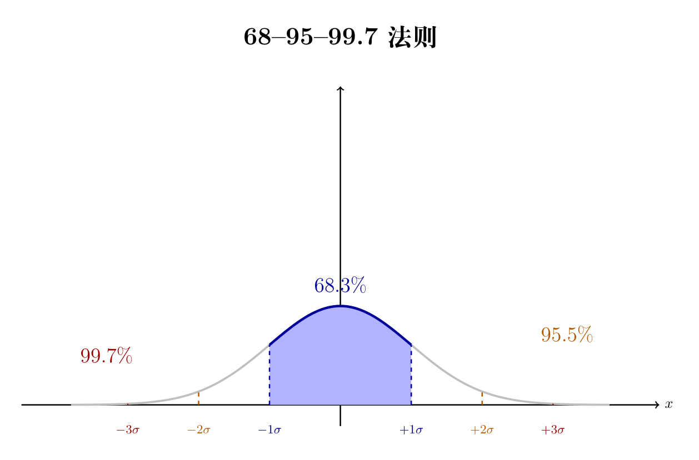

00-15 连续分布
上节课的 PMF 用柱子高度表示概率。但这招对「气温 25.317°C」完全没用——它有无限精度，你没法给每一个可能的气温画一根柱子。连续分布需要换一种思考方式。
一、单点概率 = 0：一根针尖戳不到一个点
连续随机变量取任意一个确定值的概率 = 0。
画面： 闭着眼睛往一张纸上扔一根针。针尖恰好戳中坐标 (3.1415926535..., 2.7182818284...) 的概率是多少？零。因为纸上无穷多个点，针尖恰好戳中某特定一个点在数学上是零概率事件。
但针尖戳中一个区域——比如戳中左边三分之一——概率就是 1/3。因为区域有面积，而点没有面积。
积分就是求面积。对于任意单点 $x=a$： $$P(X=a) = \int_a^a f(x)\,dx = 0$$ 积分上下限相同 → 区间宽度为零 → 面积必为零。无论 $f(a)$ 有多高，乘上宽度 0，结果就是 0。
类比： 一根线段有长度，但线段上的一个「点」长度为零。连续分布的概率由区间长度承载，单点不贡献任何概率。
所以连续分布的概率不看「柱子的高度」，而是看 PDF 曲线下方的面积：

$$P(a \le X \le b) = \int_a^b f(x)\,dx$$
翻译：$X$ 落在 $[a,b]$ 的概率 = 曲线下方、$x=a$ 到 $x=b$ 夹出来的面积。
① $f(x) \ge 0$ — 密度不能是负数
② $\int_{-\infty}^{\infty} f(x)\,dx = 1$ — 总面积恰好 = 1（所有情况概率之和）
二、均匀分布：诚实的「没有偏好」
$[a,b]$ 内每个点的密度一样。PDF 是一段水平线。没有任何偏好——如果你完全不知道气温可能是多少，均匀分布是最诚实的假设。
设 PDF 在 $[a,b]$ 内为常数 $c$，区间外为 0。由总面积 = 1： $$\int_a^b c\,dx = c \cdot (b-a) = 1 \quad\Rightarrow\quad c = \frac{1}{b-a}$$ 直观：宽 $(b-a)$ 的矩形面积要等于 1，高度自然就是 $\frac{1}{b-a}$。区间越宽，密度越矮；区间越窄，密度越高。这就是「均匀」的数学含义——每个子区间的概率正比于它的长度，和位置无关。
三、正态分布：最常用的钟形曲线
两个数字决定一切：


公式拆零件：
$$f(x) = \frac{1}{\sigma\sqrt{2\pi}} \exp\!\left(-\frac{(x-\mu)^2}{2\sigma^2}\right)$$| 零件 | 在干什么 |
|---|---|
| $(x-\mu)^2$ | 离中心多远。远处→平方很大→exp 里很负→密度≈0 |
| $2\sigma^2$（分母） | σ 越大，同样距离被大分母稀释→衰减变慢→钟变胖 |
| $\frac{1}{\sigma\sqrt{2\pi}}$ | 归一化。σ 翻倍→系数减半，把胖钟拉矮保持面积=1 |
验证直觉： σ=1 → f(0)≈0.399。σ=2 → f(0)≈0.199。恰好减半！因为钟宽了一倍，高度必须减半来保持总面积。
你可能好奇：明明是概率分布，为什么杀出来一个圆周率 $\pi$？它来自高斯积分的归一化： $$\int_{-\infty}^{\infty} e^{-x^2}\,dx = \sqrt{\pi}$$ 推导技巧：把平方积分转到极坐标—— $$\left(\int_{-\infty}^{\infty} e^{-x^2}dx\right)^2 = \int_{-\infty}^{\infty}\int_{-\infty}^{\infty} e^{-(x^2+y^2)}dx\,dy = \int_0^{2\pi}\int_0^{\infty} e^{-r^2}r\,dr\,d\theta = \pi$$ 角度积分一圈 $\int_0^{2\pi}d\theta = 2\pi$，$r$ 的积分贡献 $\frac{1}{2}$，合起来就是 $\pi$。正态分布的系数 $\frac{1}{\sigma\sqrt{2\pi}}$ 就是把这个 $\sqrt{\pi}$ 摊平成总面积 = 1 的结果。
四、CDF：一把刷子从左扫到右
画面： 一把刷子从最左边往右刷，每刷过一段曲线，就把下面的颜料扫进桶里。桶从空的（F(-∞)=0）慢慢涨，到最右边刚好满（F(+∞)=1）。
CDF $F(x)$ 是 PDF $f(t)$ 从 $-\infty$ 到 $x$ 的累积： $$F(x) = \int_{-\infty}^x f(t)\,dt$$ 反过来，PDF 是 CDF 的导数——CDF 的瞬时变化率就是该点的密度： $$f(x) = F'(x)$$ 直觉： 刷子扫过某一点时桶里进颜料的「速度」就是那一点的密度值。密度高处进得快（CDF 陡），密度低处进得慢（CDF 平）。所以 CDF 永远单调不减——颜料只进不出。

五、68-95-99.7 法则

σ 是天然尺子。1σ=正常，2σ=少见，3σ=极端。不是线性增长——钟的尾巴指数衰减，3σ 之外概率微乎其微。
标准正态 $\mathcal{N}(0,1)$ 在各点的密度：
| $x$（离中心几 σ） | $f(x)$（该点密度） | 相对中心的比例 |
|---|---|---|
| 0 | 0.3989 | 100% — 最高 |
| 1 | 0.2420 | 60.7% — 降了近四成 |
| 2 | 0.0540 | 13.5% — 只剩一成多 |
| 3 | 0.0044 | 1.1% — 几乎没了 |
结论： 从 ±1σ 到 ±2σ，概率增加了 27.2%（因为密度还不太低），但从 ±2σ 到 ±3σ 只增加了 4.2%（因为密度已经微乎其微）。不是线性比例——这是指数衰减的直接后果。
六、正态分布为什么无处不在：中心极限定理导引
画面：米粒堆山丘。 往桌上倒一堆米，米粒会堆成一座山丘——中间高、四周低，轮廓像钟形曲线。为什么？
每粒米落下时是随机的（可能偏左、可能偏右），但成千上万粒米叠加后，「偏左」和「偏右」互相抵消，最终大多数米稳定在中心附近。每次多倒一粒，山丘就更接近完美的钟形。
大量独立随机变量的和，无论各自原本是什么分布（均匀、指数、甚至离散），加起来后的分布趋向于正态分布。
$$\frac{X_1 + X_2 + \cdots + X_n - n\mu}{\sigma\sqrt{n}} \;\xrightarrow{d}\; \mathcal{N}(0,1)$$ 关键条件： 每个变量方差有限、互相独立。现实中绝大多数「总量」型变量都满足——身高 = 基因 + 营养 + 环境 + 测量误差，每一项都是独立的小因素，叠加后就变成正态。
深度学习的应用：
- 权重初始化： Xavier/He 初始化从正态分布采样，确保信号在前向传播中不爆炸不消失
- Batch Normalization： 把每层输出强行拉回均值 0 方差 1，利用正态的稳定性质
- VAE 潜在空间： 编码器输出 $\mu$ 和 $\sigma$，解码器从 $\mathcal{N}(\mu,\sigma^2)$ 采样——假设潜在变量天然服从正态
- 扩散模型： 每一步加高斯噪声、每一步去高斯噪声，整个生成过程围绕正态分布构建
正态分布之所以是「默认分布」，不是因为数学家偏爱它——而是大量微小随机因素叠加后，数学上必然如此。米粒堆山丘，数据堆正态。
🖥️ 代码
import numpy as np
# ===== 均匀分布 U(0,1) =====
a, b = 0.0, 1.0
h = 1.0 / (b - a) # PDF 高度 = 1/宽
c, d = 0.2, 0.5
prob = (d-c) / (b-a) # 概率 = 长度占比
print(f"P({c}≤X≤{d}) = {prob}")
# 模拟验证
np.random.seed(42)
samples = np.random.uniform(a, b, 100000)
in_int = np.sum((samples>=c) & (samples<=d))
print(f"模拟 P = {in_int/100000:.4f}")
# ===== 正态 PDF（手工实现） =====
def normal_pdf(x, mu, sigma):
c = 1.0/(sigma*np.sqrt(2*np.pi))
e = -0.5*((x-mu)/sigma)**2
return c * np.exp(e)
# 验证 σ 减半效应
for s in [0.5,1.0,2.0]:
print(f"σ={s:.1f}: f(0)={normal_pdf(0,0,s):.4f}")
# ===== 模拟 68-95-99.7 =====
sn = np.random.normal(0,1,100000)
for k in [1,2,3]:
r = np.mean((sn>=-k)&(sn<=k))
t = {1:0.6827,2:0.9545,3:0.9973}[k]
print(f"±{k}σ: sim={r:.4f} theory={t:.4f}")
# CDF 数值积分
xg = np.linspace(-4,4,501)
cdf = np.cumsum(normal_pdf(xg,0,1)) * (xg[1]-xg[0])
print(f"F(-2)≈{cdf[125]:.4f} F(0)≈{cdf[250]:.4f} F(2)≈{cdf[375]:.4f}")💭 概念题
- "取一个确定值的概率 = 0"但现实中气温 25°C 完全可以发生。用「针尖戳纸」的比喻解释为什么不矛盾。——考察：数学理想化 vs 测量精度
- 从总面积 = 1 的硬约束出发：如果 σ 从 1 翻到 2，钟变胖了。峰值 f(0) 应该是原来的几分之几？——考察：归一化系数 1/(σ√2π) 的直觉
- 为什么 68-95-99.7 不是线性？±3σ 为什么不等于 3×68.3%？用"钟的尾巴指数衰减"来解释。——考察：正态分布的尾部衰减速度
- 均匀分布的 PDF 高度 c=1/(b-a) 是怎么推导出来的？——考察：总面积=1 的约束
- 米粒堆山丘的比喻体现了哪个定理？列举两个深度学习中的实际应用。——考察：中心极限定理的理解与迁移